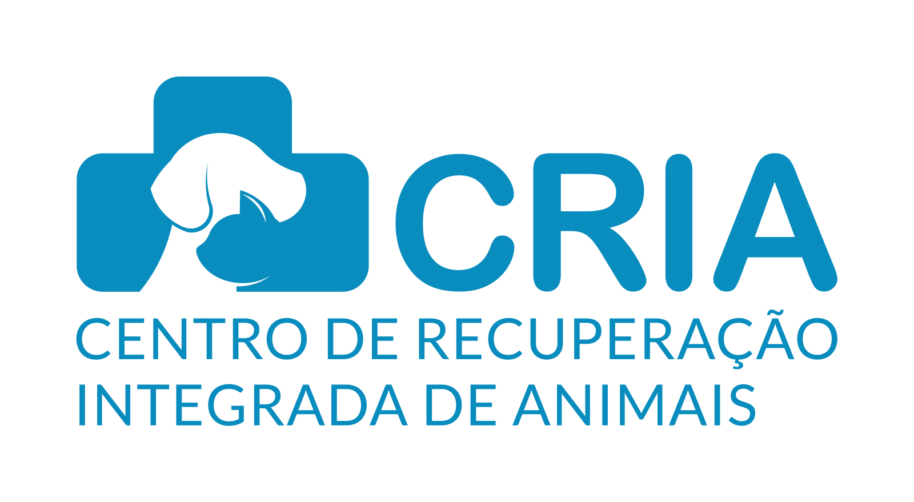
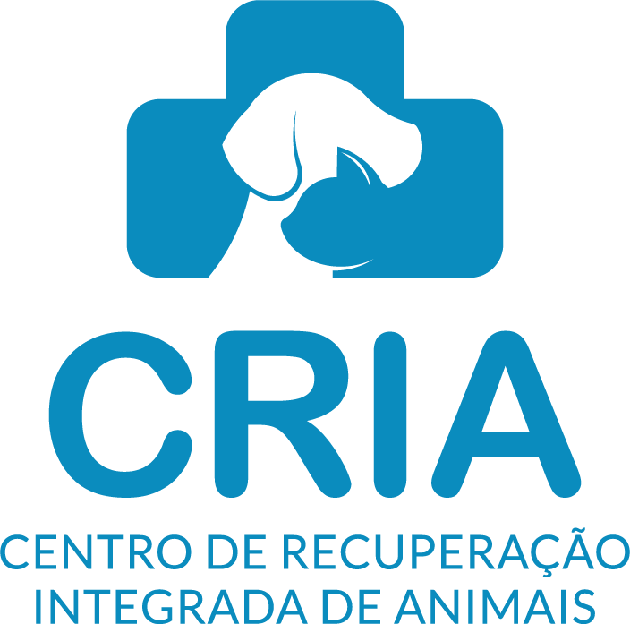
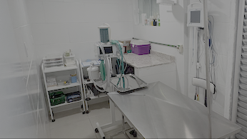
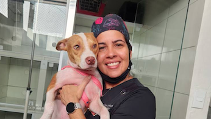
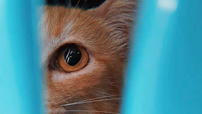
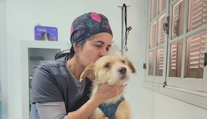
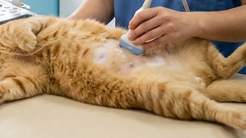
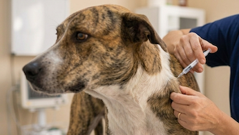

A sua clínica veterinária em Campo GrandeConsultas, vacinas, exames, especialistas, cirurgias e internação 24h para cães e gatos.
São 4,9 estrelas no Google, com 169 avaliações de clientes que já confiaram seus cães e gatos à nossa equipe.
"Fui extremamente bem tratado lá. Minha gatinha sofreu uma ruptura do diafragma e teve todo apoio, da melhor forma possível. Arrisco dizer que sem a CRIA minha gatinha não estaria mais aqui. Recomendo a todos."
"Levei minha cachorrinha que estava com o olho de cereja e fui atendida divinamente até a cirurgia, que foi ótima. A Dra. Lívia tem um carinho muito grande pelos animais e nos deixou muito tranquilas com a cirurgia e o pós."
"Uma das minhas gatas fez recentemente uma cirurgia e seguiu com tratamento na CRIA. Contamos com muita atenção da equipe e o apoio imprescindível de um grupo de especialistas, todos muito capacitados. São PESSOAS incomparáveis!"
Da prevenção ao tratamento, a CRIA reúne atendimento veterinário, diagnóstico, cirurgia, internação e especialistas.

Já realizamos mais de 6.000 cirurgias e contamos com centro cirúrgico totalmente renovado, equipamentos de ponta, equipe experiente e monitoramento de anestesia durante os procedimentos.

Mais de 5.000 castrações realizadas. Um procedimento que exige cuidado pré-operatório, equipe capacitada, anestesia adequada e acompanhamento.

Cuidado contínuo durante a recuperação, com monitoramento e suporte. Também recebemos pacientes para recuperação pós-operatória de outras clínicas e hospitais.

Atendemos cardiologia, dermatologia, endocrinologia, fisioterapia, medicina felina, nefrologia, neurologia, nutrição, odontologia, oftalmologia, oncologia e ortopedia, além do atendimento veterinário geral.

Exames laboratoriais, cardiológicos (ecocardiograma e eletrocardiograma) e de imagem, incluindo radiografia, endoscopia e ultrassonografia, realizados com o apoio de parceiros especializados.

Vacinação para cães e gatos com vacinas de qualidade e armazenamento sob controle adequado de temperatura, seguindo rigorosamente os protocolos dos fabricantes.
Sabemos que entregar seu pet para uma cirurgia ou internação pode ser um momento de apreensão. Por isso, na CRIA, experiência e estrutura caminham juntas. Já realizamos mais de 6.000 cirurgias, incluindo mais de 5.000 castrações, com uma equipe de cirurgia e anestesiologia altamente experiente.
É essa confiança que trabalhamos para conquistar todos os dias. Tirar dúvidas sobre cirurgiaNossa equipe está pronta para orientar você e indicar o atendimento mais adequado para o seu pet.
Fale com a CRIA pelo WhatsApp (21) 98662-4133